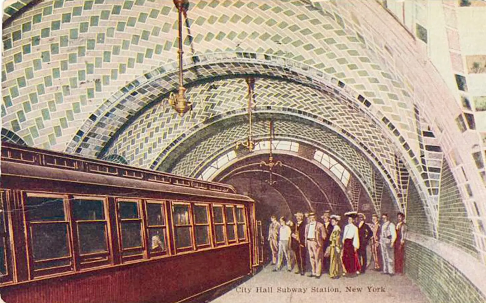

1904
The First Subway Line Opens
The New York City Subway's first line opened on October 27, 1904, running from City Hall to 145th Street. Operated by the Interborough Rapid Transit Company (IRT), the line was an instant success, carrying 150,000 passengers on its first day of operation.
